全文翻译
摘要
扩散模型已展现出令人印象深刻的生成能力，特别是在最近借助Transformer架构来提升视觉和艺术质量的进展中。然而，扩散Transformer（DiTs）仍面临推理速度慢的挑战，这主要是由其迭代去噪过程导致的。为解决这一问题，我们提出了BlockDance，这是一种无需训练的方法，它通过探索相邻时间步的特征相似性来加速DiTs。与以往那些缺乏针对不同尺度特征的定制化重用策略的特征重用方法不同，BlockDance优先识别那些结构性最相似的特征，即结构相似的时空（STSS）特征。这些特征主要位于Transformer中专注于结构的块内，且出现在去噪的后期阶段。BlockDance对这些高度相似的特征进行缓存和重用，以减少冗余计算，从而在加速DiTs的同时，最大程度地保证与原始模型生成结果的一致性。此外，考虑到生成内容的多样性以及冗余特征分布的差异性，我们引入了BlockDance-Ada，这是一种轻量级决策网络，专为特定实例的加速而设计。BlockDance-Ada能够动态分配资源，并提供更优的内容质量。事实证明，BlockDance和BlockDance-Ada在各种生成任务和模型上均有效，在保持生成质量的同时，实现了25%至50%的加速。
| 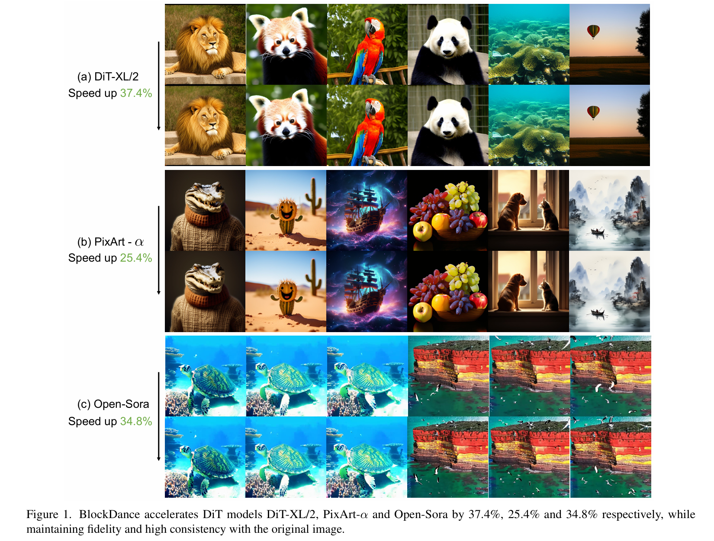 |
|---|
| 图1. BlockDance分别将DiT模型DiT-XL/2、PixArt-α和Open-Sora加速了37.4%、25.4%和34.8%，同时保持了生成内容的保真度以及与原始图像的高度一致性。 |
1. 引言
扩散模型凭借其令人印象深刻的能力，已被公认为图像和视频生成任务的关键进展。近年来，人们越来越关注将扩散模型的架构从U-Net转向Transformer[8,18,30,58]，即扩散Transformer（DiT）。这种改进的架构不仅使这些模型能够生成视觉上令人信服且具有艺术感染力的图像和视频，还能更好地遵循缩放定律。
然而，尽管扩散Transformer（DiTs）性能卓越，但由于其迭代去噪过程导致推理速度较慢，在实时场景中应用受限。现有的加速方法主要集中在两个范式：一是通过新的调度器设计[24,43]或步骤蒸馏[22,36]减少采样步骤；二是通过模型剪枝[10,15]、模型蒸馏[11,53]或减少冗余计算[26,47]降低每步的计算开销。本文旨在通过减少冗余计算来加速扩散Transformer（DiTs），因为这种范式可以即插即用于各种模型和任务。尽管特征冗余在视觉任务中已得到广泛认可[12,29]，且最近的研究也发现扩散模型的去噪过程中存在特征冗余[20,26]，但扩散Transformer（DiTs）中的特征冗余问题以及减轻这种冗余计算的潜在策略仍不明确。
为此，我们重新审视了图2（a）中扩散Transformer（DiT）块在相邻时间步之间的特征间距离，并提出了BlockDance——一种无需训练的加速方法，通过缓存和重用高度相似的特征来减少冗余计算。以往的特征重用方法缺乏针对不同尺度、不同相似程度特征的定制化重用策略。因此，重用集合中往往包含低相似性特征，导致图像出现结构失真和与提示词不符的情况。相比之下，BlockDance改进了重用策略，专注于最相似的特征，即结构相似的时空（STSS）特征。具体而言，在去噪过程中，结构内容通常在噪声水平较高的初始步骤中生成，而纹理和细节内容则在噪声水平较低的后续步骤中生成[13,14]。因此，我们假设一旦结构稳定，结构特征的变化将微乎其微。为了验证这一假设，我们对不同尺度的扩散Transformer（DiT）特征进行了解耦，如图2（b）所示。观察发现，专注于粗粒度结构内容的浅层和中层块在相邻步骤间的变化极小。相比之下，专注于细粒度纹理和复杂图案的深层块则表现出更明显的变化。因此，我们认为投入大量计算资源重新生成这些结构特征收益甚微，但会产生较高的计算成本。为解决这一问题，我们提出了一种在结构稳定后缓存和重用高度相似的结构特征的策略，以加速扩散Transformer（DiTs），同时最大程度地保证与原始模型生成结果的一致性。
| 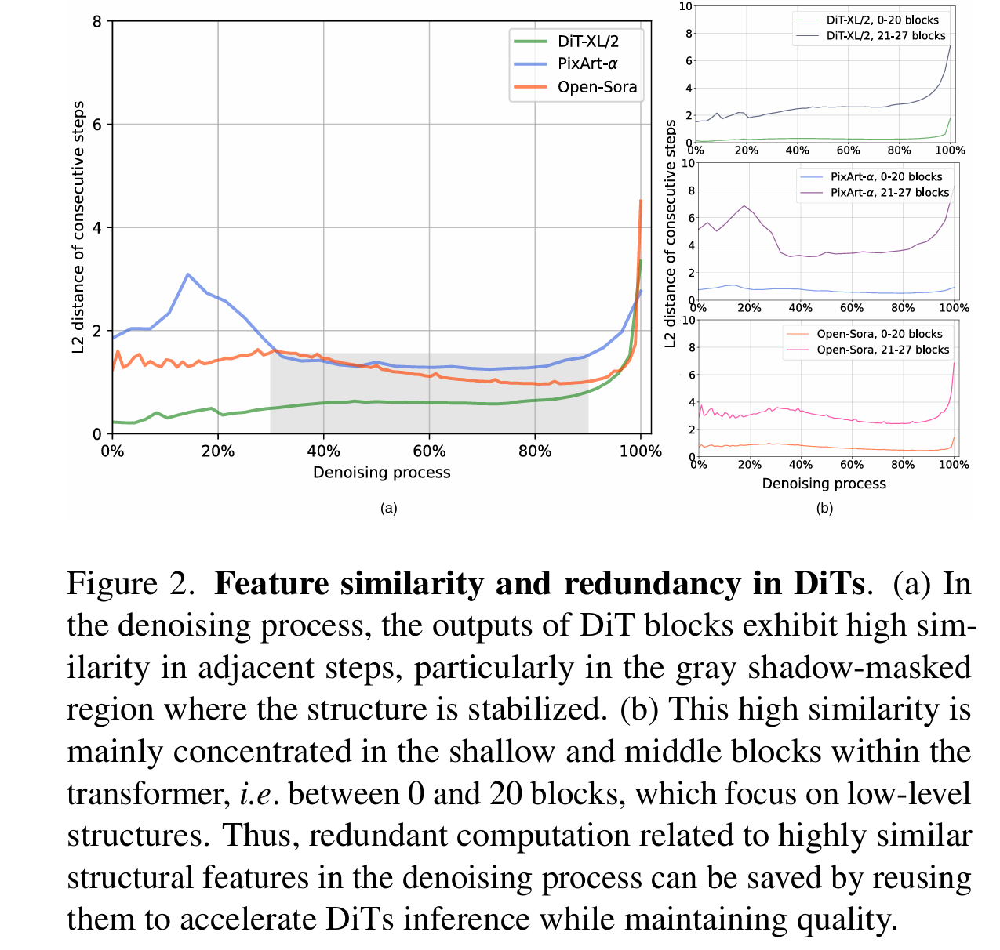 |
|---|
| 图2. DiT中的特征相似性和冗余。(a)在去噪过程中，DiT块的输出在相邻步骤中表现出高度相似性，特别是在结构稳定的灰色阴影区域。(b)这种高相似性主要集中在Transformer的浅层和中层块中，即0到20块之间，这些块专注于低级结构。因此，通过重用去噪过程中与高度相似的结构特征相关的冗余计算，可以在保持质量的同时加速DiT推理。 |
考虑到生成内容的多样性以及冗余特征分布的差异性，我们引入了BlockDance-Ada，这是一种为BlockDance量身定制的轻量级决策网络，用于特定实例的加速。在对象数量有限的简单内容中，我们观察到冗余特征的存在更多。因此，在这种情况下，频繁的特征重用足以获得令人满意的结果，同时还能带来更高的加速收益。相反，在具有大量对象和复杂相互关系的复杂构图中，可用于重用的高相似性特征较少。学习这种自适应策略并非易事，因为它涉及不可微分的决策过程。因此，BlockDance-Ada基于强化学习框架构建。BlockDance-Ada利用策略梯度方法来驱动基于提示词和中间潜在变量的特征缓存和重用策略，最大化精心设计的奖励函数，该函数鼓励在保持质量的同时最小化计算量。因此，BlockDance-Ada能够自适应地分配资源。
BlockDance已在多种数据集（包括ImageNet、COCO和MSR-VTT）上得到验证。它在类条件生成、文本到图像和文本到视频等各种生成任务以及DiT-XL/2、Pixart-α和Open-Sora等模型上进行了测试。实验结果表明，我们的方法在保持生成质量的同时，能够实现25%至50%的加速。
2. 相关工作
扩散Transformer：扩散模型凭借其出色的能力，已成为生成领域的核心力量[7,14,44]。此前，基于U-Net的扩散模型[38]在图像生成[33,37]和视频生成[2,41,49,50]等多种应用中展现了卓越性能。近年来，一些研究[4,18,21,27,32,57,58]将扩散模型的架构从U-Net转向Transformer，即扩散Transformer（DiT）。这种框架不仅能生成视觉上逼真且具有艺术感染力的内容，还能更好地遵循缩放定律，并且在高效整合和生成多模态内容方面展现出潜力。然而，扩散Transformer模型仍受限于扩散过程固有的迭代特性，这限制了其在实时应用中的使用。
扩散模型的加速：研究人员已在加速扩散模型推理过程方面做出诸多努力，这些努力可归纳为两种范式：减少采样步骤数量和降低每步计算量。第一种范式通常涉及设计更快的采样器[24,43,54,56]或进行步骤蒸馏[22,25,28,36,39,40]。第二种范式则侧重于模型级蒸馏[11,53]、剪枝[10,15]或减少冗余计算[3,20,26,42,47,55]。多项研究[20,26]已发现基于U-Net的扩散模型中存在冗余特征，但它们的粗粒度特征重用策略会包含低相似性特征，导致结构失真和文本-图像错位。相比之下，我们研究了扩散Transformer中的特征冗余，并提出重用结构相似的时空特征来实现加速，同时保持与基础模型结果的高度一致性。
扩散模型中的强化学习：已有研究致力于利用强化学习[45]微调扩散模型，使其输出与人类偏好或精心设计的奖励函数对齐。通常，这些模型[1,9,17,19,34,52]旨在提高生成内容的提示词对齐度和视觉美感。本文探索通过强化学习来学习特定实例的加速策略。
3. 方法
3.1. 预备知识
扩散模型中的正向与反向过程：扩散模型通过逐渐向数据中添加噪声，然后学习逆转这一过程，从噪声生成所需的无噪声数据。本文聚焦于文献[37]提出的在潜在空间中进行加噪和去噪的公式。在正向过程中，时间步t处带噪潜在变量$z_t$的后验概率具有闭合形式：
其中$\bar{\alpha}_{t}=\prod_{i=0}^{t} \alpha_{i}=\prod_{i=0}^{t}(1-\beta_{i})$，$\beta_{i} \in(0,1)$表示噪声方差调度。推理过程，即从噪声生成数据的反向过程，是扩散模型框架的关键部分。一旦扩散模型$\epsilon_{\theta}(z_{t}, t)$完成训练，在反向过程中，传统采样器DDPM[14]会对$z_T \sim N(0, I)$逐步去噪，共进行T步。也可以使用更快的采样器（如DDIM[43]）通过以下过程加速采样：
在去噪过程中，模型在早期阶段生成图像的粗略结构，然后在后续阶段通过添加纹理和细节信息逐步细化。Transformer中的特征：去噪步骤的数量与DiT架构中的网络推理次数相关，该架构通常由多个堆叠的块组成。每个块根据前一个块的输入依次计算其输出。靠近输入的浅层块倾向于捕捉数据的全局结构和粗略轮廓。相比之下，靠近输出的深层块会逐渐细化特定细节，以生成既逼真又具有视觉吸引力的输出[31,35,48]。
3.2. 扩散Transformer中的特征相似性与冗余
扩散Transformer的推理速度受限于其固有的迭代推理特性。本文旨在通过减少冗余计算来加速扩散Transformer。
在重新研究各种扩散Transformer模型（包括DiT-XL/2[32]、PixArt-α[4]和OpenSora[57]）的去噪过程后，得出了两个关键发现：
- 连续步骤之间存在显著的特征相似性，这表明去噪过程中存在冗余计算，如图2（a）所示；
- 这种高相似性主要体现在Transformer的浅层和中层块（0到20块之间），而深层块（21到27块之间）则表现出更多变化，如图2（b）所示。
我们将这种现象归因于结构内容通常在初始步骤生成，而纹理和细节则在后续步骤生成。
为了证实这一点，我们使用主成分分析（PCA）对PixArt-α的块特征进行可视化，如图3所示。在去噪的初始阶段，网络主要专注于生成结构内容，如人体姿态和其他基本形态。随着去噪过程的推进，网络的浅层和中层块仍然专注于生成低频结构内容，而深层块则将重点转向生成更复杂的高频纹理信息，如景深中的云和人群。因此，在结构确立后，图3中蓝色框突出显示的特征图在相邻步骤间表现出高度一致性。我们将这种计算定义为冗余计算，它与Transformer浅层和中层块所关注的低级结构相关。基于这些观察，我们认为投入大量计算资源重新生成这些相似特征收益甚微，但会导致更高的计算成本。因此，我们的目标是设计一种策略，利用这些高度相似的特征来减少冗余计算并加速去噪过程。
| 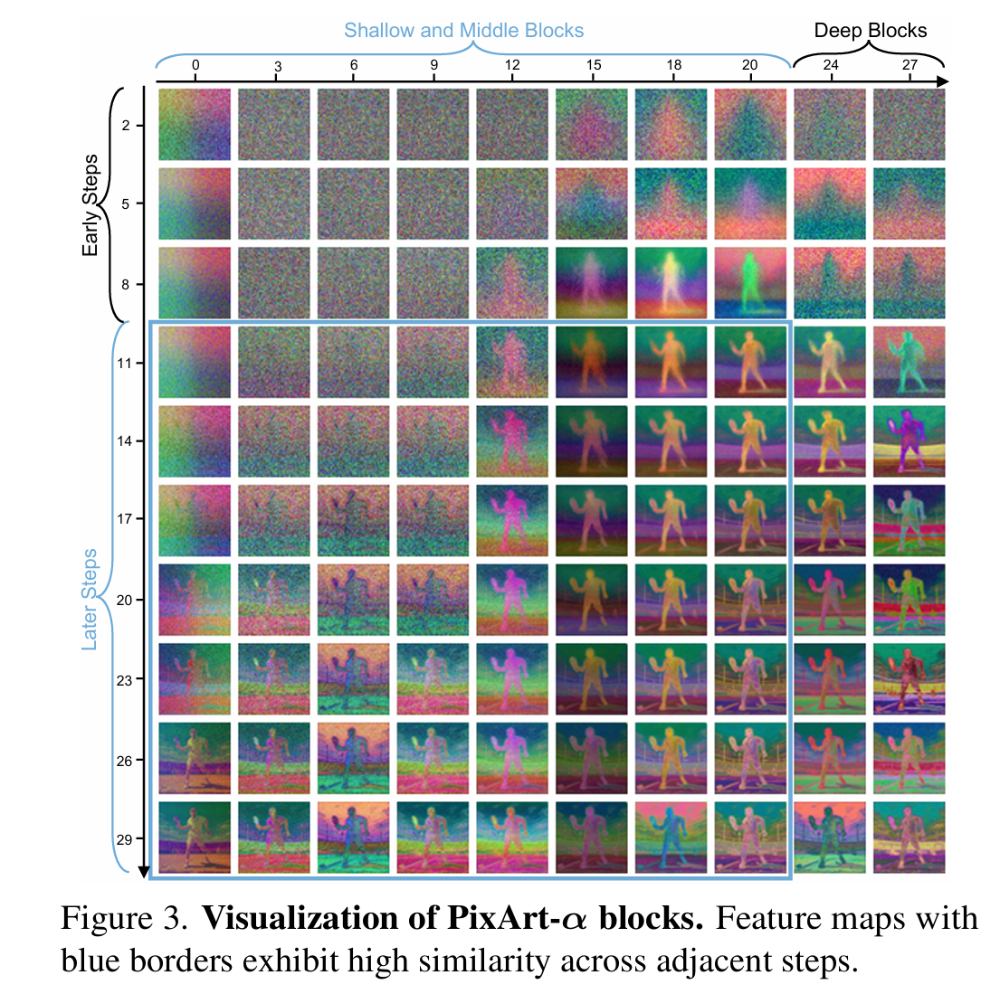 |
|---|
| 图3. PixArt-α块的可视化。带有蓝色边框的特征图在相邻步骤中表现出高度相似性。 |
3.3. 无需训练的加速方法
我们提出了BlockDance，这是一种简单而有效的方法，通过利用去噪过程中步骤之间的特征相似性来加速扩散Transformer。通过有策略地缓存高度相似的结构特征并在后续步骤中重用它们，我们减少了冗余计算。
具体而言，我们将去噪步骤设计为两种类型：缓存步骤和重用步骤，如图4所示。在连续的时间步中，缓存步骤首先基于$z_{t+1}$进行标准的网络前向计算，输出$z_t$，并保存第i个块的特征$F_t^i$。对于接下来的时间步（即重用步骤），我们不进行完整的网络前向计算，而是执行部分推理。更具体地说，我们将缓存步骤中缓存的特征$F_t^i$重用为重用步骤中第（i+1）个块的输入。因此，由于Transformer块的顺序推理特性，重用步骤中前i个块的计算可以省去，只需重新计算比i更深的块。
| 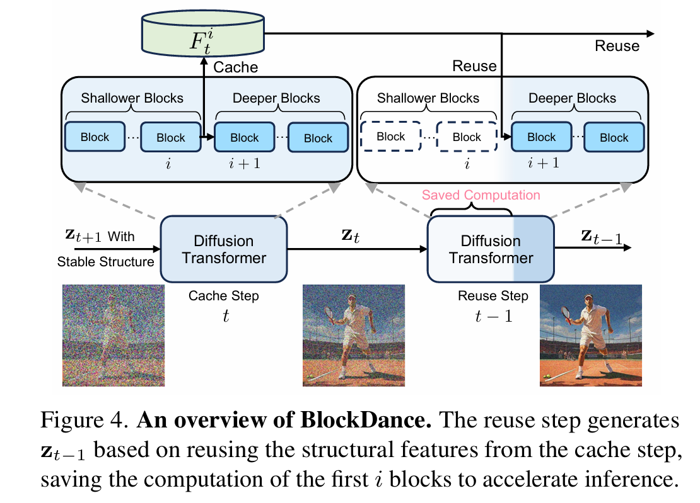 |
|---|
| 图4. BlockDance概述。重用步骤基于缓存步骤中的结构特征生成zt-1，节省了前i个块的计算量以加速推理。 |
为此，确定最佳的块索引以及应集中进行重用的去噪过程阶段至关重要。基于图2和图3的见解，我们将索引设置为20，并将重用集中在去噪过程的后60%（结构稳定之后）。这些设置能够实现特征重用的解耦，并专门重用结构相似的时空特征。因此，我们将去噪步骤的前40%设置为缓存步骤，并将剩余60%的去噪步骤平均分为若干组，每组包含N个步骤。每组的第一个步骤指定为缓存步骤，后续的N-1个步骤为重用步骤，以加速推理。当新组到来时，新的缓存步骤会更新缓存的特征，这些特征随后将用于该组内的重用步骤。此过程重复进行，直到去噪过程结束。N越大，表示重用频率越高。我们将这种缓存和重用策略称为BlockDance-N，它采用无需训练的范式，能够在保持生成内容质量的同时有效加速多种扩散Transformer。
3.4. 特定实例的加速方法
然而，生成内容的特征相似性分布各不相同，如图6所示。我们可视化了每个去噪步骤中块索引i≤20的特征与其他步骤特征的余弦相似性矩阵。发现相似特征的分布与生成内容的结构复杂度相关。在图6中，随着结构复杂度从左到右增加，适合重用的相似特征数量减少。为了改进BlockDance策略，我们引入了BlockDance-Ada，这是一种为特定实例加速量身定制的轻量级决策网络。
| 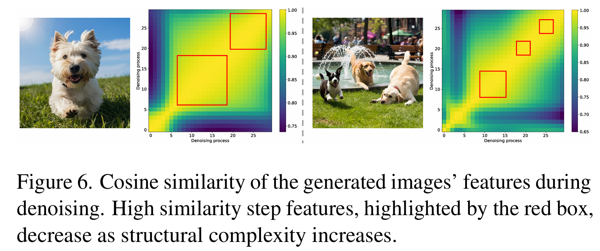 |
|---|
| 图6. 生成图像特征的余弦相似性。随着结构复杂性的增加，红色框突出显示的高相似性步骤特征减少。 |
BlockDance-Ada利用强化学习来处理不可微分的二元决策（即顺序选通），以动态确定去噪过程中的每个步骤是缓存步骤还是重用步骤。如图5所示，对于总共s个去噪步骤，给定潜在变量$z_T \sim N(0, I)$和提示词P的文本嵌入$c=\tau(p)$，我们首先执行ρ步常规计算（即缓存步骤）以获得中间潜在变量$z_ρ$。状态空间定义为$z_ρ$和c，决策模型中的动作定义为确定后续s-ρ步中的每一步是否为缓存步骤。
| 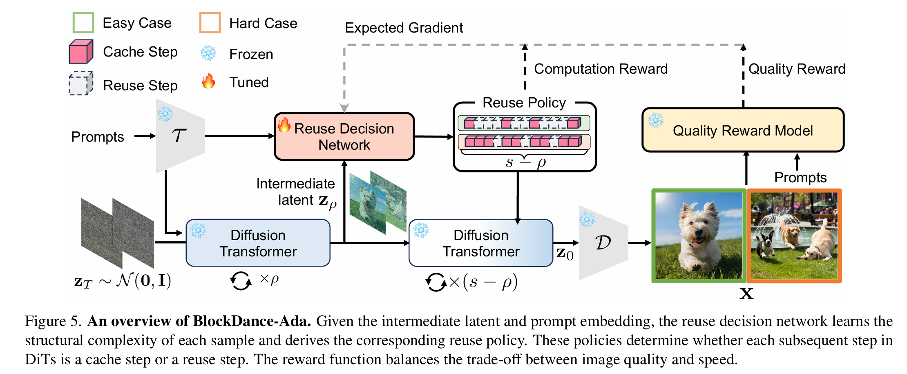 |
|---|
| 图5. BlockDance-Ada概述。给定中间潜在变量和提示词嵌入，重用决策网络学习每个样本的结构复杂性并得出相应的重用策略。这些策略决定了DiT中的每个后续步骤是缓存步骤还是重用步骤。奖励函数平衡了图像质量和速度。 |
更正式地说，由参数w控制的决策网络$f_d$学习特征相似性的分布，然后将其映射到向量$m \in \mathbb{R}^{(s-ρ)}$：
这里，m中的每个元素都归一化到[0,1]范围内，表示执行缓存步骤的可能性。我们定义了一个具有（s-ρ）维伯努利分布的重用策略$\pi^f(u | z_ρ, c)$：
其中$u \in \{0,1\}^{(s-ρ)}$是基于m的动作，$u_t=1$表示第t步是缓存步骤，u中的零元素表示重用步骤。在训练期间，通过从相应策略中采样生成u，在测试时则采用贪心方法。通过这种方法，扩散Transformer基于重用策略生成潜在变量$z_0$，然后解码器D将潜在变量解码为像素级图像x。
基于此，我们设计了一个奖励函数，以激励$f_d$在保持质量的同时最大化计算节省。该奖励函数由两个主要部分组成：图像质量奖励和计算奖励，用于平衡生成质量和推理速度。对于图像质量奖励Q(u)，我们使用质量奖励模型[52]$f_q$基于视觉美感和提示词一致性对生成的图像进行评分，即$Q(u)=f_q(x)$。计算奖励C(u)定义为重用步骤的归一化数量，由以下公式给出：
最后，总体奖励函数形式化为$R(u)=C(u)+\lambda Q(u)$，其中λ调节图像质量的重要性。此时，决策网络$f_d$可以通过最大化预期奖励来进行优化。
4. 实验
4.1. 实验细节
4.1.1. 模型、数据集与评估指标
我们在类条件生成、文本到图像生成以及文本到视频生成任务上进行了评估。对于类条件生成，我们使用DiT-XL/2[32]在ImageNet[6]数据集上每个类别生成50张512×512的图像，采用DDIM采样器[43]，引导尺度为4.0。对于文本到图像生成，我们使用PixArt-α[4]在COCO2017[23]的25K验证集上生成1024×1024的图像，采用DPMSolver采样器[24]，引导尺度为4.5。对于文本到视频生成，我们使用Open-Sora[57]在MSR-VTT[51]的2990测试集上生成16帧512×512分辨率的视频，采用DDIM采样器，引导尺度为7.0。我们遵循先前的工作[4,32,57]评估这些任务，并报告文本到图像生成的IQS分数[52]和Pickscore[17]。我们在A100 GPU上通过生成延迟（即每张图像/每个视频的生成时间）来衡量推理速度。
4.1.2. 实现细节
对于BlockDance，PixArt-α中的缓存和重用步骤主要在去噪过程的40%到95%之间进行，而在DiT-XL/2和Open-Sora中，这些步骤主要在去噪过程的25%到95%之间进行。这三个模型生成每个内容时缓存的特征大小分别为18MB、4.5MB和72MB。默认的块索引设置为20。对于BlockDance-Ada，我们将决策网络设计为轻量级架构，由三个Transformer块和一个多层感知机构成。决策网络的参数为0.08B。我们将ρ设置为去噪总步数的40%。奖励函数中的参数λ设置为2。对于PixArt-α，我们在其训练数据集的10,000个子集上训练步骤选择网络，共训练100个 epoch，批大小为16。我们使用Adam优化器，学习率为10⁻⁵。
4.2. 主要结果
4.2.1. 无训练范式的实验
加速PixArt-α用于文本到图像生成。表1中COCO2017的25k验证集结果证明了BlockDance的有效性。我们将ToMe[3]和DeepCache[26]扩展到PixArt-α作为基线。对于ToMe，我们通过合并操作移除25%的标记以减少计算成本。对于DeepCache，我们在整个去噪过程中以2为间隔重用特征，具体而言，重用PixArt-α中28个块的前14个块的输出。当N=2时，BlockDance在保持图像质量（包括视觉美感和提示词遵循度）的同时，将PixArt-α加速了25.4%。不同的N值可实现不同的速度-质量权衡。
| 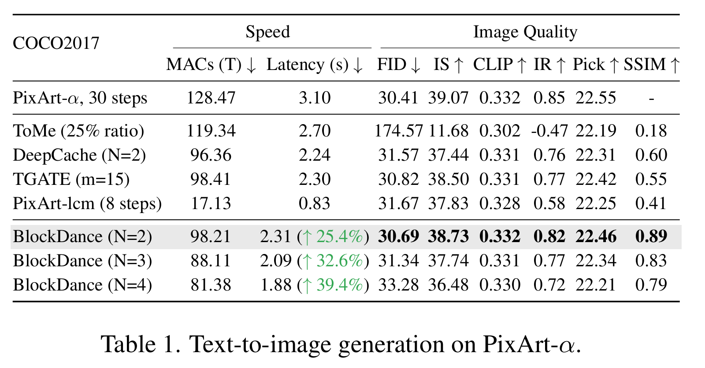 |
|---|
| 表1. PixArt-α的文本到图像生成结果 |
与ToMe相比，无论重用频率N如何，BlockDance的性能都明显优于ToMe。这是因为DiT与基于U-Net的架构相比，具有更强的注意力密集型架构，因此在DiT中持续使用标记合并会加剧质量下降。与DeepCache相比，BlockDance通过专注于高相似性特征，在相近速度下在所有图像指标上都取得了更好的性能。我们专门减少去噪后期的冗余结构计算，避免重用不相似的特征，最大限度地减少图像质量损失。然而，DeepCache在整个去噪过程中都重用特征，并且没有专门针对高相似性特征进行重用。这导致重用集中包含不相似的特征，从而导致结构失真和提示词对齐度下降。与通过减少交叉注意力计算中的冗余来加速的TGATE[55]相比，BlockDance支持不包含交叉注意力的DiT，例如SD3[8]和Flux[18]。此外，实验结果表明，在相同的加速收益下，BlockDance在各种指标上都优于TGATE。与通过一致性蒸馏训练获得的PixArt-LCM[5]相比，尽管BlockDance需要更多的推理时间，但无需额外训练就能在多个指标上实现更高的生成质量。值得注意的是，由于我们有针对性的重用策略，BlockDance生成的图像与基础模型具有更高的一致性，这体现在与基线相比显著更好的SSIM性能上。
加速DiT/XL-2用于类条件生成。ImageNet的50k图像结果如表2所示。我们将ToMe和DeepCache扩展到DiT/XL-2作为基线。当N=2时，BlockDance在保持图像质量的同时将DiT/XL-2加速了37.4%，并且与DeepCache相比性能更优，同时与基础模型生成的图像保持更高的一致性。通过增大N，BlockDance的加速比可高达57.5%，并且在图像质量上始终优于ToMe。
| 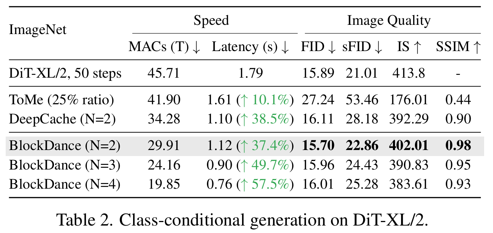 |
|---|
| 表2. DiT-XL/2的类条件生成结果 |
加速Open-Sora用于文本到视频生成。BlockDance在加速视频生成任务方面同样有效。MSR-VTT上的加速结果如表3所示。当N=2时，BlockDance在保持视频质量（包括视觉质量和时间一致性）的同时，将Open-Sora加速了34.8%。增大N可实现不同的质量-速度权衡。相比之下，DeepCache的质量显著下降，如FVD等指标的恶化所证明。这是因为DeepCache重用了低相似性特征，例如去噪早期阶段的结构信息。
| 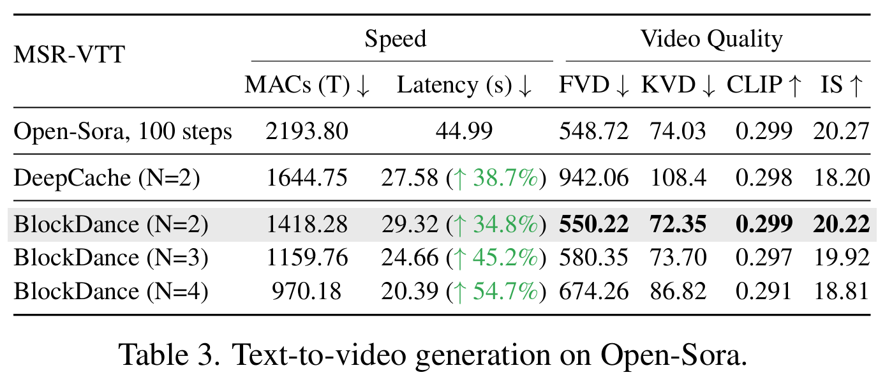 |
|---|
| 表3. Open-Sora的文本到视频生成结果 |
定性结果。我们在图7中进一步对我们的方法进行了定性分析。ToMe通过合并相邻相似标记来节省自注意力计算，但这种方法对 transformer 密集型架构不太友好，导致生成低质量图像并出现“块状伪影”。虽然DeepCache和TGATE实现了约27%的加速，但在某些复杂情况下，它们可能导致与原始图像的显著结构差异，并出现伪影和语义丢失。PixArt-LCM通过额外的一致性蒸馏训练加速PixArt-α，虽然加速显著，但视觉美感和提示词遵循度明显下降。相比之下，BlockDance在没有额外训练成本的情况下实现了25.4%的加速，在结构和细节上与原始图像保持高度一致。
| 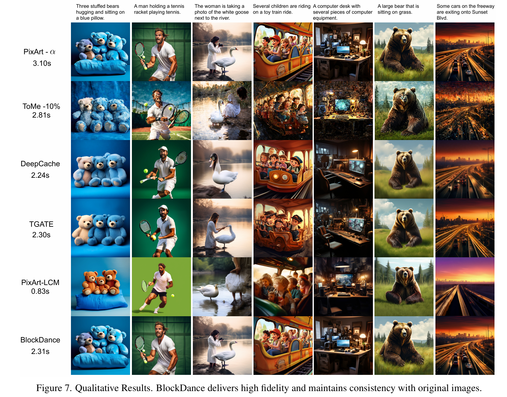 |
|---|
| 图7. 定性结果。BlockDance生成的内容保真度高，与原始图像保持一致性。 |
4.2.2. BlockDance-Ada的评估
PixArt-α上的动态推理。表4详细展示了BlockDance-Ada的性能。通过基于特定实例策略为每个样本动态分配计算资源，BlockDance-Ada在实现接近BlockDance（N=3）的加速的同时，提供了更优的图像质量。与BlockDance（N=2）相比，BlockDance-Ada在相似质量下提供了更大的加速收益。
| 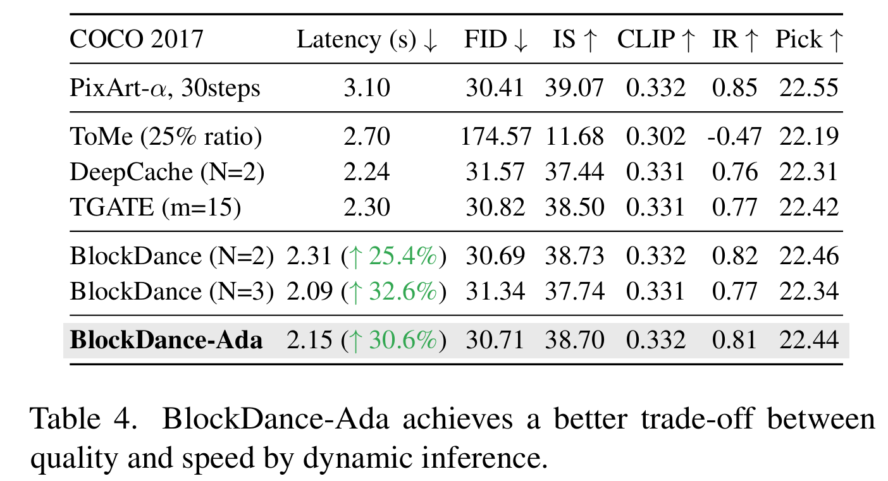 |
|---|
| 表4. BlockDance-Ada在速度和质量之间实现了更好的权衡 |
4.3. 讨论
4.3.1. 消融研究
重用频率的影响。如图8所示，我们展示了随着N的增加，生成图像的变化情况。随着生成时间的减少，图像的主要主题保持一致，但细节的保真度逐渐下降，这与表1中的见解一致。不同的N值为各种速度-质量权衡提供了灵活的选择。
| 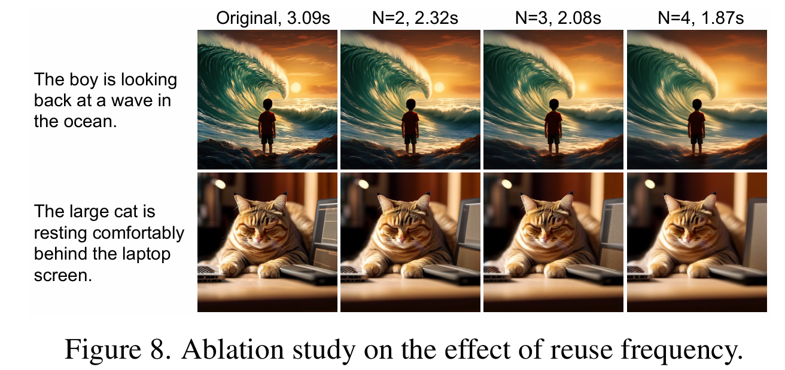 |
|---|
| 图8. 重用频率影响的消融研究。 |
在不同去噪阶段使用BlockDance的效果。如图9所示，我们研究了在去噪过程的不同阶段（初始阶段（0%-40%）和后期阶段（40%-95%））应用BlockDance的影响。BlockDance主要重用结构特征，因此在专注于结构的初始阶段应用它可能会导致结构变化或伪影（图9（a）中的红框突出显示），因为结构尚未稳定。相反，在后期阶段，结构信息已经稳定，重点转向纹理细节，此时重用结构特征可在加速推理的同时使质量损失最小化，如图9（b）所示。
| 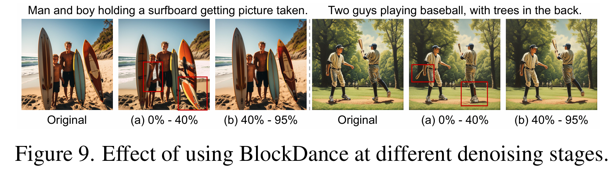 |
|---|
| 图9. 在去噪不同阶段使用BlockDance的效果。 |
重用不同深度块的影响。我们研究了仅重用浅层和中层块与同时重用更深层块的影响，如图10所示。由于深层块的特征相似性较低，重用它们会导致与细节相关的计算损失，从而导致纹理细节退化，如图10（b）中的红框所示。相反，重用专注于结构信息的高相似性浅层和中层块，质量退化最小。
| 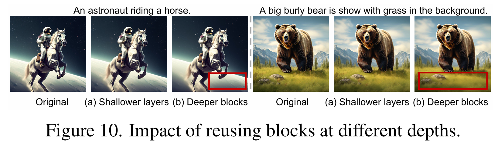 |
|---|
| 图10. 重用不同深度块的影响。 |
5. 结论
在本文中，我们提出了BlockDance，这是一种新型的无需训练的加速方法，通过缓存和重用结构稳定后的结构级特征（即结构相似的时空特征），BlockDance在最大限度减少质量损失的同时显著加速了扩散Transformer，并与基础模型保持高度一致性。此外，我们还引入了BlockDance-Ada，它通过根据特定实例的重用策略动态分配计算资源来增强BlockDance的性能。
局限性：尽管BlockDance能够以即插即用的方式加速各种扩散Transformer模型，但在去噪步骤极少的场景（例如1到4步）中，其效果有限，这是由于相邻步骤之间的相似性降低所致。
BlockDance：重用结构相似的时空特征以加速扩散Transformer的补充材料
5.1. 关于BlockDance设计的更多说明
我们补充了（步骤、块、L2距离）的3D表面图，如图11（a）所示。BlockDance专注于重用蓝色框内高相似性的时空特征。相比之下，其他方法不加区分地重用紫色框所框住的所有时空区域的特征，这会因重用低相似性特征而导致质量下降。为了进一步证明蓝色框内的特征主要是结构相似的，我们根据每个步骤预测的噪声直接计算$x_{0}^{t}=VAE_{decoder}(\frac{z_{t}-\sqrt{1-\alpha_{t}} \cdot \epsilon_{\theta}(z_{t}, t)}{\sqrt{\alpha_{t}}})$，然后计算相邻时间步图像$x_{0}^{t}$的SSIM分数以衡量结构相似性。如图11（b）所示，与那些不加区分地重用特征的方法相比，我们在结构稳定后重用专注于结构特征（即扩散Transformer中的浅层和中层块）的计算，从而与原始内容保持高度一致性。
| 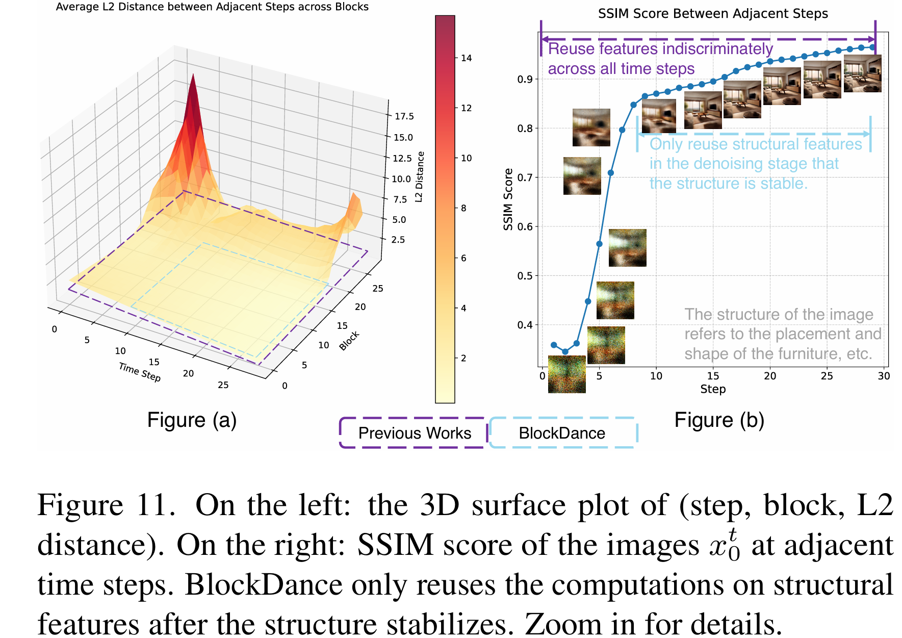 |
|---|
| 图11. 左：（步骤、块、L2距离）的3D表面图。右：相邻时间步图像x0t的SSIM分数。BlockDance仅在结构稳定后重用结构特征的计算。 |
5.2. 额外实验
在任意步数下加速。我们提出的加速范式与其他加速技术具有互补性，可在其基础上进一步提升性能。在此，我们验证了BlockDance在不同采样步数下对各模型的加速效果。如表5、表6和表7所示，BlockDance在各种步数下均能有效加速，同时保持生成内容的质量。
| 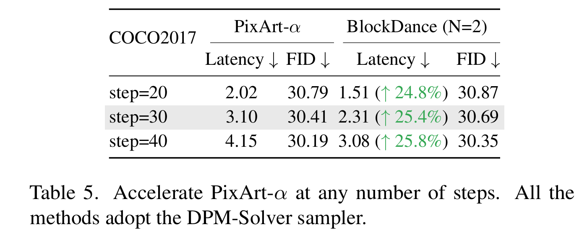 |
|---|
| 表5. 在不同步数下加速PixArt-α的结果（所有方法均采用DPM-Solver采样器） |
| 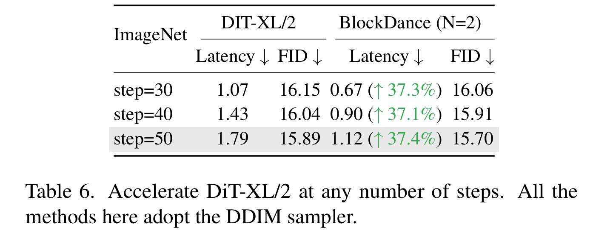 |
|---|
| 表6. 在不同步数下加速DiT-XL/2的结果（所有方法均采用DDIM采样器） |
| 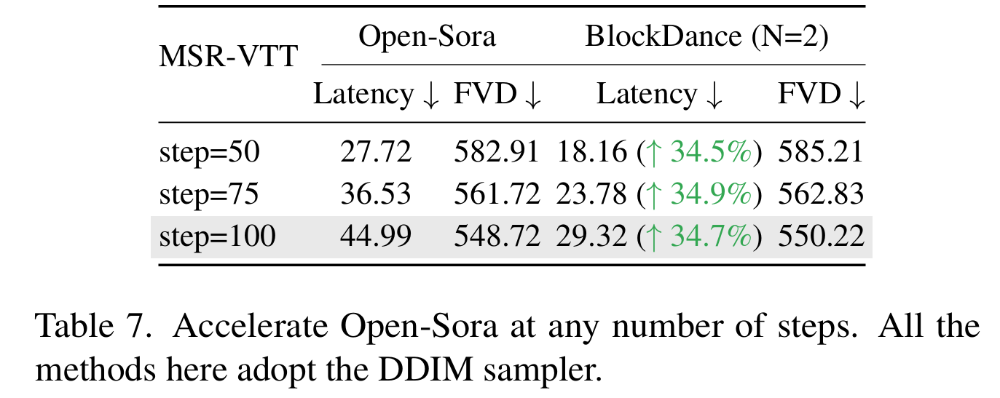 |
|---|
| 表7. 在不同步数下加速Open-Sora的结果（所有方法均采用DDIM采样器） |
加速SD3用于文本到图像生成。为了验证我们提出的范式在不同扩散Transformer架构变体上的有效性，我们将BlockDance应用于基于MMDiT的扩散Transformer模型[8,18]，例如Stable Diffusion 3[8]。实验在COCO2017的25k验证集上进行，结果如表8所示。实验结果表明，当N=2时，BlockDance在保持图像质量（包括视觉美感和提示词遵循度）的同时，将SD3加速了25.3%。不同的N值可实现不同的速度-质量权衡。
| 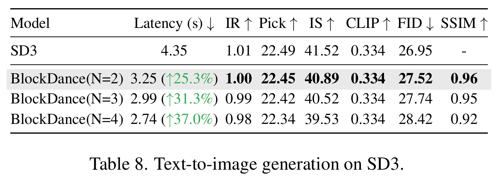 |
|---|
| 表8. SD3的文本到图像生成结果 |
更多定性结果。为了全面验证我们提出的方法，我们为每个扩散Transformer模型提供了额外的定性结果，如图12、图13和图14所示。我们的方法在与原始模型生成内容高度一致的同时，实现了显著的加速，且保持了高质量。
图12展示了使用30步DPM-Solver采样的PixArt-α生成样本（上排）和使用30步DPM-Solver采样加N=2的BlockDance生成样本（下排）。我们的方法在保持视觉美感和提示词遵循度的同时，实现了25.4%的加速。这里的提示词选自COCO2017验证集。
 |
|---|
| 图12. PixArt-α：使用30步DPM-Solver采样的样本（上排）和使用30步DPM-Solver采样加N=2的BlockDance的样本（下排）。我们的方法在保持视觉美感和提示词遵循度的同时，加速了25.4%。这里的提示词选自COCO2017验证集。 |
图13展示了使用50步DDIM采样的DiT-XL/2在ImageNet上的生成样本（上排）和使用50步DDIM采样加N=2的BlockDance生成样本（下排）。我们的方法在保持图像质量的同时，实现了37.4%的加速。
 |
|---|
| 图13. DiT-XL/2在ImageNet上的结果：使用50步DDIM采样的样本（上排）和使用50步DDIM采样加N=2的BlockDance的样本（下排）。我们的方法在保持图像质量的同时，实现了37.4%的加速。 |
图14展示了使用100步DDIM采样的Open-Sora生成样本（上排）和使用100步DDIM采样加N=2的BlockDance生成样本（下排）。我们的方法在保持视觉质量以及与原始视频高度运动一致性的同时，实现了34.8%的加速。
 |
|---|
| 图14. Open-Sora：使用100步DDIM采样的样本（上排）和使用100步DDIM采样加N=2的BlockDance的样本（下排）。我们的方法在保持视觉质量和与原始视频高度运动一致性的同时，实现了34.8%的加速。 |
总结
加速原理
- 探索相邻时间步的特征相似性
- 缓存和重用结构相似的STSS特征
- 引入BlockDance-Ada，利用强化学习构建
- 缓存前一时间步的Transformer块的而调整，但是重用多深的特征需要BlockDance-Ada进行决定。